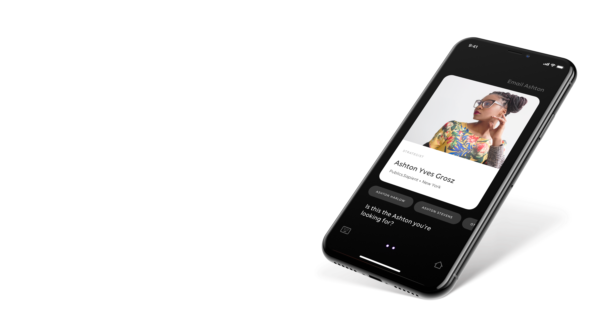
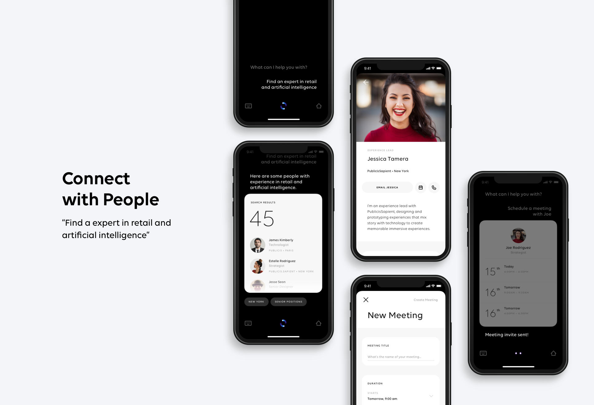
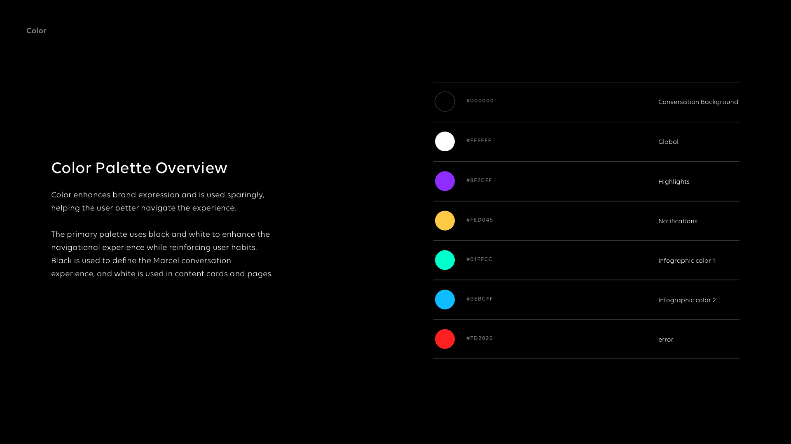
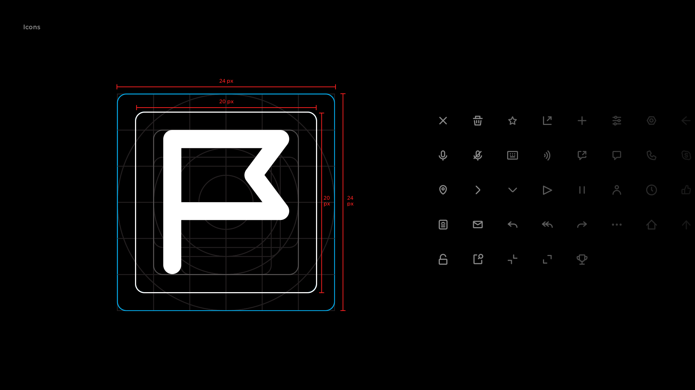
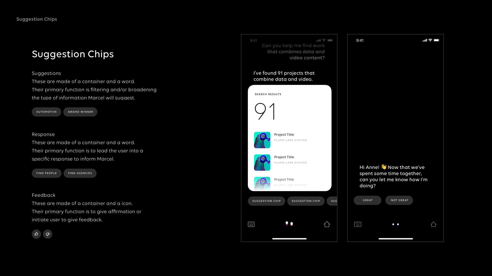
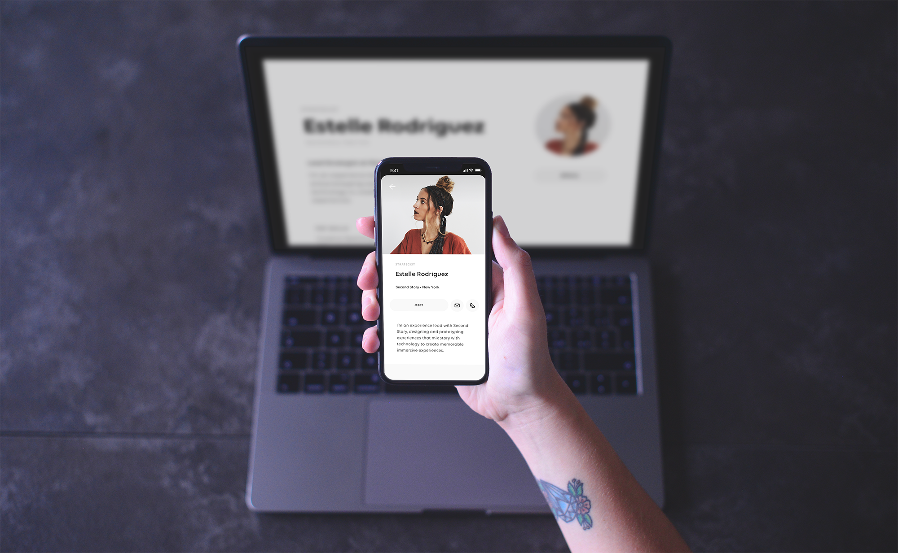
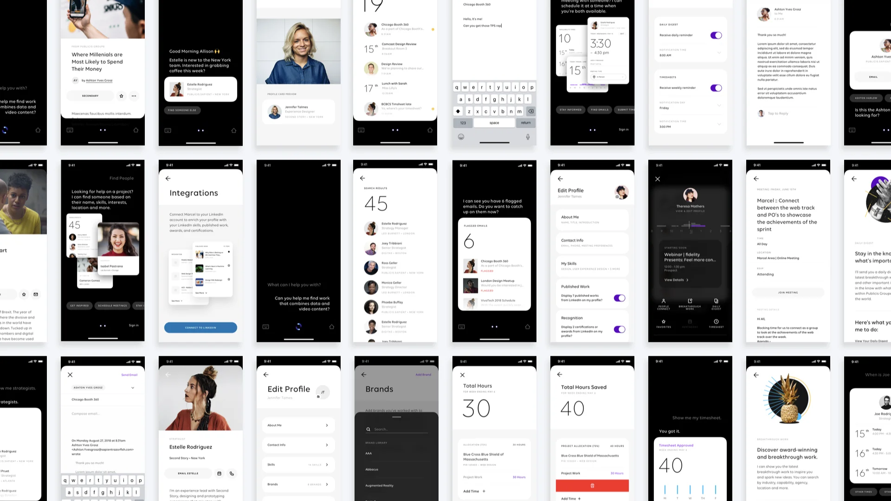
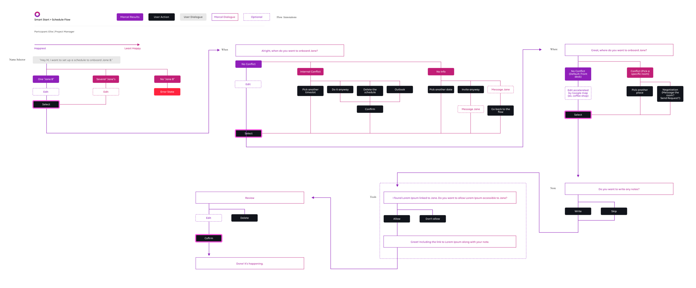

Marcel 1.0
An AI-powered platform built to connect 80,000 creatives across 130 countries — the world’s first attempt at a single workplace for one of advertising’s largest holding companies.
One holding company, seventy-six agencies, zero shared infrastructure.
Publicis Groupe employs around 80,000 people across 130 countries and dozens of brands — Saatchi & Saatchi, Leo Burnett, BBH, Razorfish, Sapient, and many more. For most of the company’s history, those agencies operated as fundamentally separate businesses with their own tooling, their own creative culture, and their own way of finding people for projects.
The bet behind Marcel was that AI could make the entire creative force of the company addressable as a single network — and that a product, not a reorg, was the way to do it.

The product had to do three different jobs.
Marcel needed to be three products at once, held together by a single design system: a professional networking layer, a project-staffing engine, and an internal communications platform. Each had a different audience inside the company; each had a different success metric.
The design challenge wasn’t any one surface — it was the architecture that made them feel like one product rather than three things bolted together.
Designing for three audiences in one surface.
Built a shared design language first
Before any surface, established a color system, type scale, and component library that could carry social, work, and broadcast contexts without breaking character.
Made AI legible, not magical
The matching engine surfaced people, projects, and opportunities. The UI had to communicate why something was being recommended — not just what — so users could trust and tune it.
One product across three platforms
Web, iOS, and Android all had to feel like the same product to the same person, even as the contexts of use differed sharply.

A visual language that spanned the whole network.
The team built the design system in parallel with the surfaces — color, type, iconography, and component patterns evolving alongside the screens that needed them. The goal was a system flexible enough to absorb growing scope without losing coherence.



Web, mobile, conversation.
The launch surface spanned web and native mobile, with a conversational layer that surfaced the matching engine’s output without forcing users to learn another query interface.



Launched to the entire company.
Marcel 1.0 launched company-wide in 2019, becoming the first time Publicis Groupe operated as a single addressable creative network. The product evolved well past 1.0; the foundation work I contributed to shaped the visual language and information architecture that carried through subsequent releases.